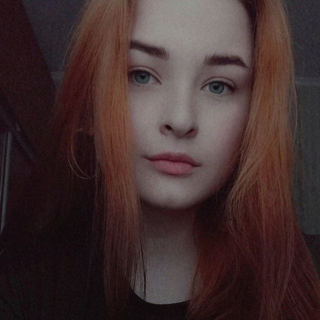

Student of Computer Engineering and Artificial Intelligence Systems
Photo taken in 2021
Motivated student, ready to work. I am constantly learning and improving my skills.
Responsible for assigned tasks and deadlines. I plan to become a full-stack developer,
as I have a great interest in software and web development.
I am also interested in studying UI/UX design and artificial intelligence.
Since school, I have been interested in programming.
I was born and lived until 2022 in Ukraine in the city of Chernihiv.
Entered the bachelor's degree at the Chernihiv Polytechnic National University,
majoring in computer engineering. Currently, I have excellent results - more than 95% success rate.
Now I am continuing my studies in the 3rd year online.
Since May 2022, I have been living in Sevenoaks, England.
In July of 2022, I had an internship at a global specialized firm with headquarters in London.
Contacts:
| 2020-2024 | Artificial Intelligence - BSc (Hons) | Chernihiv Polytechnic National University |
|---|---|---|
| Course content | In the first year, the following subjects were studied: Basics of programming in C++, discrete structures, computer calculations (higher mathematics), hardware and software of computer systems, physical foundations of electronic technology, algorithms and data structures. | 95,5% |
| In the second year, the following subjects were studied: Computer logic and basics of circuit engineering, Object-oriented programming in Java, Organisation of databases, System programming, Statistical basics of computer engineering, Computer architecture, Computer graphics. | 96% | |
| In the third year, the following subjects were studied: Operating systems, Organization of computer networks, Algorithms and optimization methods, Applied programming technologies, Neural networks and evolutionary computing |
| July 2022 | Technical Intern | Capula Investment Management |
|---|---|---|
| Created a Rest project using Java and PostgreSQL. Checked the correct operation of the project with the help of Postman. Developed a web application using Java, PostgreSQL and React. Got acquainted and wrote bash scripts. Developed SQL queries, and also familiarised myself with NoSQL. |
I have experience with C++ (Object-oriented programming, Data structure), Java (Unit Testing, Spring Boot, Maven, Object-oriented programming, Data structure), SQL (PosteSQL, MySQL,SQL-queries).
I have been playing music for more than 10 years. I graduated with honors from a music school, majoring in choral and pop singing and piano.